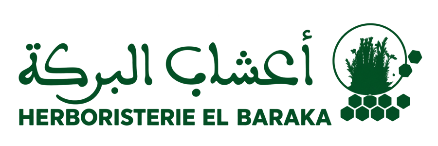
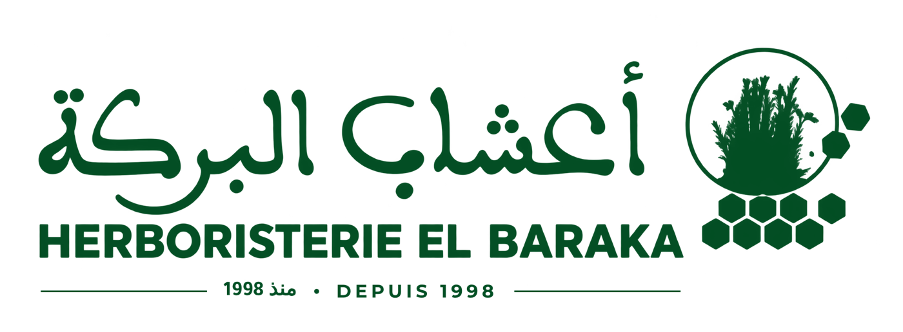
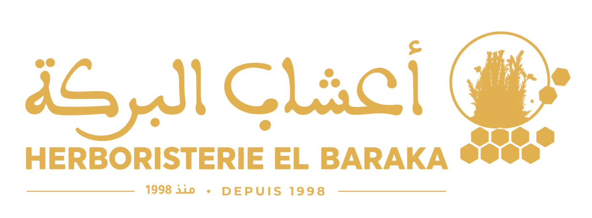
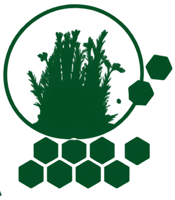

Le même El Baraka, mieux mis en valeur
Quelques idées pour la boutique. On garde tout ce que les clients connaissent, à commencer par le logo, et on donne à chaque produit une étiquette qui se lit de loin.
Première ébauche. Elle part de ce qu’on voit de l’extérieur : la façade, le logo, les étiquettes actuelles. Les produits, les prix, les formats et les miels montrés sont des hypothèses, là pour donner une idée.
Le logo de toujours, avec sa date
الشعارLe logo reste tel quel : c’est lui que les clients reconnaissent depuis 1998. La seule proposition est d’y ajouter une ligne, «منذ 1998 · depuis 1998».
Vingt-huit ans au même endroit, c’est le meilleur argument de la boutique, et aujourd’hui il n’apparaît nulle part.



Avec la date · or, sur l’enseigne
Le cercle seul, pour les petits formats- Rien n’est redessinéMêmes lettres, même bouquet, mêmes alvéoles, même vert. On change seulement la couleur selon le support.
- Une ligne fine sous le nomEn arabe et en français, assez discrète pour ne pas changer l’équilibre du logo.
- Le cercle seul quand c’est petitPour un autocollant, un tampon ou une photo de profil, là où le nom serait illisible.
- La date là où elle compteSur l’enseigne et le sac imprimé. Sur les étiquettes et la carte du miel, le logo reste tel qu’aujourd’hui.
Le miel : une couleur par miel
العسلSur l’étagère, chaque miel aurait sa couleur et le nom de sa fleur en grand, lisibles à trois mètres.
Le pot garde l’étiquette de la coopérative, avec son nom et son autorisation ONSSA. Si nous y mettions le nôtre, la boutique deviendrait un atelier d’étiquetage, avec l’autorisation et les contrôles qui vont avec. L’idée est donc de leur proposer ce dessin pour leurs pots.
- À 3 mètresLa couleur et le nom de la fleur : on trouve son miel avant de lire.
- À 1 mètre«عسل», le nom en français, «Miel du Maroc», et le poids sur sa petite étiquette crème, en bas à droite.
- Dans la mainValeurs, conditionneur, autorisation, lot, dates, et le dessin gravé de la fleur.
- Une couleur par mielOranger, thym, zakkoum, caroube, eucalyptus, toutes fleurs. Comme un rayon d’épices bien rangé.
- Le nom de la fleur en très grandEn lettres kufi épaisses, parce que les traits fins disparaissent à distance. Le mot répète la couleur.
- La fleur gravée en filigraneOn ne la voit que de près, et c’est ce qui donne envie de prendre le pot en main.
- Les coins, discrets«100 % pur · خالص» en petit cachet en haut à gauche, le poids en bas à droite, à la même distance du bord.
- Le miel se voitUne étiquette jaune sur un miel jaune cache la marchandise. Ici, c’est la couleur du miel qui vend.
- Le scellé se voit et se déchireLe disque porte la couleur et le nom, visibles d’en haut sur les étagères basses. De petites entailles au bord du couvercle : une fois ouvert, il ne se recolle pas.
Les produits maison : le vert, c’est nous
منتجات الدارNos mélanges, eux, peuvent porter notre nom. Leur étiquette reprend la logique du miel, dans nos couleurs.
Toute la gamme a la même face verte, avec le logo de toujours en haut. De loin, nos produits se reconnaissent comme une famille, et comme El Baraka. Le nom s’écrit en grand, et une bande de couleur dit la famille.
- La même face verte pour toutUne seule couleur pour la marque : on reconnaît El Baraka sur l’étagère sans lire.
- Le logo de toujours en hautTel qu’aujourd’hui, en crème sur le vert. Le poids est discret, dans le coin de la bande.
- Le nom en grand«للهضم», «المساء», «رأس الحانوت» : assez grand pour se lire de loin.
- Une bande par familleDigestion, détente, cuisine, soin, huiles. La même couleur peut servir sur l’étagère.
- Le mode d’emploi gardéCelui du mélange digestif est repris tel quel : deux cuillères à soupe avec un peu d’eau après chaque repas.
- Des mots d’usage traditionnel«للهضم وراحة البطن» dit la même chose qu’une promesse médicale, sans en avoir l’air.
Le sac : notre nom à la main de chaque client
الكيسLe pot de miel ne peut pas porter notre nom, le sac si. Chaque client repart avec «أعشاب البركة» à la main, dans la rue et jusque chez lui.
- Pour commencer : un tampon et un autocollantDes sacs kraft ordinaires, le logo et le téléphone au tampon vert, un autocollant rond pour fermer. Peu de frais, rien à stocker.
- Plus tard : un sac impriméKraft à poignées, une seule couleur : le logo avec sa date, le téléphone et l’adresse.
Elle présente le miel acheté : sa couleur, son goût, ce qui va avec. Au dos, elle rappelle qu’un miel qui cristallise n’est pas un faux miel. Les valeurs de couleur et de goût sont indicatives.
La façade
الواجهةPour le jour où le caisson lumineux sera à changer : le logo de toujours en doré sur un vert foncé, et le vert clair d’aujourd’hui gardé en liseré lumineux.
- L’or sur un vert profondLes lettres sont déjà dorées aujourd’hui ; un vert plus foncé les fait ressortir, de jour comme de nuit.
- Le store resteLe vert et blanc fait déjà partie de l’image de la boutique.
- Le cercle du logo, doré, sur les portesÀ la place des autocollants actuels.
- La date sur l’enseigneC’est là qu’elle compte le plus : tout le boulevard la voit.